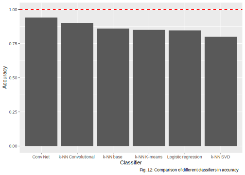

3.8 Explainable Computer Vision with embedding and k-NN classifier
Authors: Olaf Werner, Bogdan Jastrzębski (Warsaw University of Technology)
3.8.1 Abstract
Interpretability of machine learning models become in recent years even more important. The need for it raised a wave of criticism towards deep neural networks (DNNs), as they are not interpretable. However, DNN can give much better results than other classifiers for different tasks, e.g. image recognition, and therefore there is a trade-off between interpretability and robustness. In this work, we investigate further the idea of Deep k-Nearest Neighbors (DkNN), simplifying the previous algorithm. We present an easy augmentation technique of k-NN classifier, that can significantly boost its performance in image recognition using autoencoders or other unsupervised learning algorithms. We obtain a classifier that is interpretable in a sense, that we can provide explanatory training set observations and at the same time much more robust. This technique, however, as presented here, produced worse results than a convolutional neural network, and therefore there is still a room for improvement.
3.8.2 Introduction
Artificial neural networks are widely used in computer vision. Convolutional neural networks [3], in particular, can achieve very high performance on this task and surpass other popular classifiers like SVM, logistic regression, and decision trees. However, the increase in performance is associated with a loss of interpretability. Artificial neural networks are infamous for their complexity and lack of interpretability and are often criticized for it.
K-nearest neighbours classifier (k-NN) one of the simplest classification algorithms, yet it is interpretable and highly complex. The idea behind it is simple. To predict the class of a new observation, e.g. an image, we calculate the measure of similarity between it and all observations in collected training data. Then we find an arbitrarily chosen number of the most similar observations. We base our prediction on their labels.
There are several problems with k-NN. Its prediction depends on the choice of the mentioned measure of similarity. The optimal measure can be very complex and non-trivial. Let’s take the problem of image recognition as our example. Two images that represent the same object on a different background can have the majority of the values of pixels different. A measure that treats each pixel independently, e.g. euclidean distance, would lead to an incorrect conclusion, that those images display very different objects. The second problem with the k-NN is that it scales poorly with the size of the training dataset, as every time we make a prediction, we must measure the similarity between a new observation and all observations in our training dataset, which can become very time-consuming.
Interpretability of the k-NN classifier is in two things: interpretability of the measure of similarity we use and in that, with each prediction, we can provide the most similar observations from the training data set used to make the prediction. We argue that the latter is more important and that we can still call a model interpretable if the measure of similarity is not.
The idea is not new. It has been previously investigated by Nicolas Papernot and Patrick McDaniel from Pennsylvania State University [6]. In our approach, we simplify their algorithm. We propose to use data embedding techniques to produce more meaningful spaces, where the use of p-norms as similarity measures is more justified. In this article, we will show that it is possible to increase significantly the performance of the k-NN using this technique.
3.8.3 Methodology
The simplest and one of the most robust classifiers is k-NN. It doesn’t generalize information, instead, it saves training dataset and during prediction, it finds the most similar historical observations and predicts the label of a new observation based on their labels. However, it not only can’t distinguish important features from not important ones but also to find more complex interactions between variables.
One of the simplest, yet very robust classification algorithms is k-NN. It does not generalize knowledge, instead, it finds the most similar observations from the training data set to new observation and predicts its class based on theirs. However, it’s not only unable to distinguish important from irrelevant features, but also find interactions between variables.
A way to improve classification results with the k-NN algorithm is to determine a better measure of similarity than the p-norm. In this paper, we propose a measure of similarity of the following form:
\[ dist(x,y) := \| Emb(x) - Emb(y) \|_p \]
where \(Emb: \mathbb{R}^n \rightarrow \mathbb{R}^m\), \(\mathbb{R}^n\) is the space of observations and \(\mathbb{R}^m\) is the space of embedding (n > m). Note, that \(dist\) is not a metric.
An embedding can be done made in various ways. In this article, we will explore different embedding techniques, including:
SVD embedding
Convolutional Autoencoder
K-means embedding
3.8.3.1 Data
To present our results, we are going to use the data set Fashion-Mnist. Fashion-MNIST is a dataset of Zalando’s article images, consisting of a training set of 60,000 examples and a test set of 10,000 examples. Each example is a 28x28 grayscale image, associated with a label from 10 classes. We have the following classes :
T-shirt/top
Trouser
Pullover
Dress
Coat
Sandal
Shirt
Sneaker
Bag
Ankle boot.
3.8.3.2 Autoenconders and Embedding
In the theory of information and statistics, we distinguish data from information. Data is a carrier of information. Information is something in data, that is meaningful to us. For instance, consider two highly correlated random variables \(X\) and \(Y\). Knowing the value of one gives us great knowledge of the value of the other. Hence, if we have prior knowledge about the way in which those variables are connected: \(2X + 3 \approx Y\), there is little difference between knowing the value of one of them: \(X = 23.3454\), and both values:\(X = 23.3454, Y = 48.9877\), because we can roughly guess value of one based on the other: \(X = 23.3454, 2X + 3 \approx Y \models Y \approx 49.6908\). The relation between variables can be very complex. We still lose some information though.
In statistics and machine learning, we try to represent data in a meaningful way, in that sense, representation gives us a lot of information in very little data. In other words, we try to find a way to compress data. One way to do so is to use autoencoders. An autoencoder is a parametric function composed of two parts: the encoder part and the decoder part.
\[Autoenc = Decoder \circ Encoder\]
where \(Encoder: \mathbb{R}^n \rightarrow \mathbb{R}^m\), \(Decoder: \mathbb{R}^m \rightarrow \mathbb{R}^n\) and \(n>m\). We want our autoencoder to compress and decompress data i.e. firstly shrink data to some representation and then recreate observation based on this low-dimensional representation. We want our recreated data to be as close to original observation as possible, for instance in mean square error (MSE):
\[min_\theta \frac{1}{n}\sum_{i=1}^{n}\|(Decoder_\theta \circ Encoder_\theta)(x_i)-x_i \|^2\]
3.8.3.3 The use of standard interpretable models in computer vision
We often think of logistic regression or decision tree classifiers as being interpretable. Their interpretability, however, relies strongly on the interpretability of observation features. When features are hardly interpretable, the information that a particular feature has been used is meaningless. For instance, if we know, that at some point the classifier makes a choice based on the age of the patient, it is a piece of meaningful information. On the other hand, if we know, that at some point the classifier makes a choice based on one of a million pixels, this information might be meaningless to us. It gives very little explanation, why a particular pixel has been used.
In this section, we will explore the use of standard interpretable models and we will try to argue, that they are not useful when it comes to computer vision.
Fig. 1: An example of logistic regression weights: In the picture we can see a visualisation of the weights of linear regression model (bright pixel values mean large weight and dark - small). This picture shows, that it is impossible to interpret those weights.
3.8.3.3.1 Logistic Regression
Logistic regression[1] is a basic classification model. We get the probability of belonging to a given class by:
\[{\displaystyle p={\frac {e^{\beta _{0}+\beta _{1}x_{1}+...+\beta _{n}x_{n}}}{e^{\beta _{0}+\beta _{1}x_{1}+...+\beta _{n}x_{n}}+1}}}\]
where \(\beta _{0},\beta _{1},...,\beta _{n}\) are coefficients of logistic regression. We obtain coefficients using gradient descent. Because we have multiple labels, we train 10 different logistic regression models and use softmax function to normalize probabilities of belonging to any particular class. We then visualize coefficients as images with bright spots indicating that they are important. The result is depicted in fig 1. As you can see, it doesn’t convey the information about, how does the model make a prediction. This shows, that linear regression might not be useful for interpretation in image recognition.
3.8.3.3.2 Decision Trees
Decision trees are very useful classifiers that can be interpreted, however, they are suitable when we have very few meaningful dimensions. The tree that at a time makes a choice based on individual pixels is not a good classifier and it’s explanation provides little knowledge about, why the selected pixels have been chosen. Therefore, we will not examine the use of this class of classifiers.
3.8.3.4 Our Approach
In this section we will show an alternative to logistic regression and decision trees, that is more interpretable and at the same time can obtain significantly better results.
3.8.3.4.1 The k-NN Classifier
k-NN (k nearest neighbours) is a classifier, that doesn’t generalize data. Instead, we keep the training dataset, and every time we make a prediction, we calculate the distance (for instance euclidean distance) between our new observation and all observations in the training dataset to find k nearest. Prediction is based on their labels.
k-NN is a robust classifier, that copes with highly nonlinear data. It’s also interpretable because we can always show k nearest neighbours, which are an explanation by themselves. It, however, is not flawless. It for instance poorly scales with the size of the training dataset, while at the same time it needs, at least in some domains, a very big training dataset, as it doesn’t generalize any information.
We can significantly improve its performance by introducing complex similarity functions. If the similarity function is interpretable, we obtain a highly interpretable classifier. If not, we get semi interpretable classifier, where we cannot tell, why observations are similar according to the model, however, we can at least show similar training set examples, based on which prediction has been made.
This complex distance functions can be made in many different ways. In this paper, we explore functions of a form
\[dist(Img1, Img2) = d_e(Emb(Img1), Emb(Img2))\]
where \(d_e\) is the euclidean distance, so we simply compute the euclidean distance between embeddings of images. The scheme of our augmented k-NN classifier is displayed in fig. 1. As we can see, a new image firstly gets embedded and then a standard classification with k-NN is made. This type of architecture allows us to create a robust and interpretable classifier.

Fig. 2: The k-NN Classifier Architecture: In the picture we can see the k-NN classifier architecture. Firstly an image get’s embedded by the embedder and then, combined with embedded training dataset, form prediction via k-NN.
3.8.3.4.2 Embedding techniques
In this section, we will explore different embedding techniques and their potential use.
3.8.3.4.2.1 K-means
We use the K-means algorithm [2] (also known as the Lloyd algorithm) to find subclasses in every class. Algorithm:
Initiate a number of random centroids
For every observation find the nearest centroid
Calculate the average of observations in every group found in point 2
These averages become new centroids
Repeat points 2 to 4 until all new centroids are at the distance less than \(\epsilon\) from old centroids
We use euclidean distance. Prediction for every new observation is simply class of nearest centroid. The algorithm is even more interpretable because we can visualize centroids as images. Thanks to using K-means to find subclasses our images are not blurry. Also because the number of all subclasses is much lower than the number of records in data set using k-NN only on centroids is much faster. Consider the dataset showed in fig. 3 a). In fact, a good subset of the training data set is enough to create a very good classifier. For instance, 5 points depicted on fig. 3 b), approximate sufficiently training data distribution. Notice, that we, in fact, don’t have to choose particular observations. We can instead choose points in observation space that are similar to observations. This is what the k-means algorithm does and so, we can obtain good training data approximation using k-means. An example of a centroid image is showed in fig. 4.

Fig 3: K-means embedding example. In the picture a) we can see original set and in the picture b) - the same set with it’s representation

Fig 4: An example of a centroid image. A centroid in observation space is just an image. Here we can see, that this centroid is close to the “shoes cluster”.
3.8.3.4.2.2 SVD
SVD is a standard method of dimensionality reduction [4]. It is rewriting \(m\times n\) matrix \(M\) as \(U\Sigma V^T\) where \(U\) is \(m\times m\) orthonormal matrix, \(V^T\) is \(n\times n\) orthonormal matrix and \(\Sigma\) is \(m\times n\) rectangular diagonal matrix with non-negative real numbers on the diagonal. We assume that singular values of \(\Sigma\) are in descending order. Now by taking the first columns of \(V^T\) we get vectors that are the most relevant. Let \(V_n\) be a matrix, whose columns are \(V\) columns with n greatest eigenvalues. Such a matrix is a linear transformation matrix, that turns observations into their embedding. It can be shown, that \(V_n\) is the best transformation in \(L_2\) norm sense. The SVD autoencoder scheme is depicted in fig. 5. Visualisation of an eigenvector, an image from dataset and the same image with an eigenvector used as a filter is showed in the picture 6.

Fig. 5: SVD autoencoder diagram: In this picture we can see SVD autoencoder diagram.
Fig. 6: Most important eigenvector. In the picture a) we can see an eigenvector, b) an image from dataset and in c) two images combined using a) as a filter and b) as a background. Because there in the picture c) there is still great bright area (intersection of a) and c) is significant), value in representation associated with this eigenvector will be larger.
3.8.3.4.2.3 Convolutional Autoencoder
We can create a semi-interpretable model by training a convolutional autoencoder and then creating a k-NN classifier on pre-trained embedding. As mentioned previously, it has several advantages over k-NN, because it uses \(L^2\) distance in more meaningful space. Embedder is not interpretable, but our classifier can at least show us historical observations, that had an impact on prediction, which sometimes is good enough, especially when it can be easily seen why two images are similar and we only want a computer to do humans work. For instance, if we provide 5 images of shoe that caused that our image of the shoe has been interpreted as shoe, we maybe don’t know, why those images are similar according to our classifier, however, we can see, that they are similar, so a further explanation of a model is not required. This model, again, is not fully interpretable.
Our implementation of convolutional autoencoder consists of the following layers:
- Conv2d:
- Input Channels: 1
- Output Channels: 50
- filter size: 5
- Conv2d:
- Input Channels: 50
- Output Channels: 50
- filter size: 5
- Conv2d:
- Input Channels: 50
- Output Channels: 10
- filter size: 5
- Conv2d:
- Input Channels: 10
- Output Channels: 10
- filter size: 5
- Conv2d:
- Input Channels: 10
- Output Channels: 1
- filter size: 5
- Conv2d:
- Input Channels: 1
- Output Channels: 10
- filter size: 5
- Conv2d:
- Input Channels: 10
- Output Channels: 10
- filter size: 5
- Conv2d:
- Input Channels: 10
- Output Channels: 50
- filter size: 5
- Conv2d:
- Input Channels: 50
- Output Channels: 50
- filter size: 5
- Conv2d:
- Input Channels: 50
- Output Channels: 1
- filter size: 5
along with pooling and unpooling between.

Fig. 10: Architecture of the convolutional autoencoder: composed of several convolution layers.
3.8.3.5 Black-Box Convolutional Neural Networks
The classical approach in computer vision is to use convolutional neural networks [3]. A standard artificial neural network sees all variables as being independent of each other. It doesn’t capture the same patterns across image space, nor it recognizes, that two pixels next to each other are somehow related. Shifted image is something completely different to a standard neural network from it’s original. Therefore, ANN won’t produce good results. There is, however, a smarter approach that can cope with those problems: convolutional neural networks.
A convolutional neural network is an artificial neural network, that tries to capture spacial dependencies between variables, for instance, dimensions of pixels that are close to each other. It does that via introducing convolution. The easiest interpretation of what a convolutional neural network is doing is that instead of training big network that uses all variables (in our case all pixels), we train smaller transformation with a smaller number of variables (a smaller subset of pixels close to each other), that we use in many different places on the image. In some sense, we train filters. Every filter produces a corresponding so-called “channel”. After the first layer, we can continue filtering channels using convolutional layers. We place a dense layer (or a number of them) at the end and its result is our prediction. For further reading, please see [3].
Having a very good performance, they are impossible to explain. There are some techniques of visualizing filters [8], however more complex networks are generally uninterpretable. Along with standard artificial neural network, we will use it as an instance of robust classifier for comparing results. Our implementation of convolutional neural networks consist of the following layers:
- Conv 2d:
- Input Channels: 1
- Output Channels: 50
- filter size: 5
- Max Pool:
- Size: 2
- Conv 2d:
- Input Channels: 50
- Output Channels: 70
- filter size: 5
- Max Pool:
- Size: 2
- Conv 2d:
- Input Channels: 70
- Output Channels: 100
- filter size: 5
- Max Pool:
- Size: 2
- Conv 2d:
- Input Channels: 100
- Output Channels: 150
- filter size: 5
- Linear:
- Input_size: 1350
- Output_size: 500
- Linear:
- Input_size: 200
- Output_size: 10
Here’s architecture’s visualization:

Fig. 11: The architecture of the Convolutional classifier: there are two section to this classifier. The first is convolutional layers section and the second is dense layers section.
3.8.4 Results

| Model | ACC |
|---|---|
| Black-Box Convolutional | 0.941 |
| k-NN Convolutional | 0.923 |
| k-NN base | 0.8606 |
| k-NN K-means | 0.8512 |
| Logistic regression | 0.847 |
| k-NN SVD | 0.8001 |
We use accuracy because classes are balanced and any measure which accounts for similarities between classes (for example classifying Sandal as Ankle boot is worth more than classifying Sandal as Bag) seemed arbitrary to us.
As expected Convolutional Neural Network is by far the best model here. However, we still achieved something. While using embedders such as K-means and SVD resulted in worse results, the accuracy was not that much worse and we reduced dimensionality at least a thousand folds, which resulted in much faster calculations. Using Convolutional embedder got us second-best results and while it is semi interpretable it is still better than base K-NN and Logistic regression which turned out to be not interpretable.
3.8.5 Discussion and Conclusion
In this article, we proposed an easy way of getting interpretable computer vision using convolutional embedder. While it is not fully interpretable, explanations are not made post factum as in traditional neural networks and it is achieving better results than less robust classifiers.
Interpretability of a model in complex problems, such as image recognition is difficult to achieve. In computer vision, standard interpretable models not only don’t give satisfying results but also fail to provide meaningful explanations due to high dimensionality of data and general lack of meaningfulness of individual variables (values of the brightness of pixels).
While interpretability of decision trees or linear regression depends directly on the interpretability of variables, in k-NN we explain predictions by providing the most similar observations from training data set. In the case of computer vision, k-NN doesn’t give as good results as deep neural networks. However, it’s performance can be improved via more complex similarity measures. As we saw, measure composed of L2 distance measured between learned representations via autoencoders can increase the accuracy of a k-NN model. In addition, especially when it comes to images, if done correctly, explanation of the way the similarity of two images is calculated is almost always unnecessary, as the similarity is visible.
The technique presented in this paper is not only simple to implement, but also very general, as there exists a great variety of embedding techniques that can be used. Linear embedding techniques, such as SVD embedding turned out to be worse than a standard k-NN. Also, k-means encoding didn’t improve classification accuracy. However, convolutional autoencoder, which is highly non-linear and can model a great variety of functions (instead of k-means) achieved much better results than a standard k-NN. Those results were not as good as the results of the black-box model but comparable.
In the future, it’s worth to explore the use of different non-linear embedding techniques, as they are promising. This approach is very general and can be applied not only to computer vision, and so, the benefits of the use of it in different domains are also yet to be discovered.
3.8.6 Bibliography
- Park, Hyeoun-Ae. “An Introduction to Logistic Regression: From Basic Concepts to Interpretation with Particular Attention to Nursing Domain”, College of Nursing and System Biomedical Informatics National Core Research Center, Seoul National University, Seoul, Korea, 2013. Accessed at https://pdfs.semanticscholar.org/3305/2b1d2363aee3ad290612109dcea0aed2a89e.pdf?fbclid=IwAR2AEWs_oTJsGldDkTNdu5oDuwqMRG9URpYFTYg4ONEdxUSTbXS2AntHLNM
- Huda Hamdan Ali, Lubna Emad Kadhum. “K-Means Clustering Algorithm Applications in Data Mining and Pattern Recognition”, International Journal of Science and Research (IJSR), 2015. Accessed at https://pdfs.semanticscholar.org/a430/da239982e691638b7193ac1947da8d0d241b.pdf?fbclid=IwAR33LLbo0m9qcyayoI3qj1tJsnB8YzYehzFK7VUGz4tkH_IlATvhknPKOuk
- Keiron O’Shea1, Ryan Nash. “An Introduction to Convolutional Neural Networks”, Department of Computer Science, Aberystwyth University, Ceredigion, SY23 3DB, 2015. Accessed at https://www.researchgate.net/publication/285164623_An_Introduction_to_Convolutional_Neural_Networks?fbclid=IwAR35OQjrXNAm5549CX0-LkkdjppnNZIlnKfnFkHUcHsUZ_G-wdYDZ0v6SVY
- Carla D. Martin, Mason A. Porter. “The Extraordinary SVD”. Accessed at https://people.maths.ox.ac.uk/porterm/papers/s4.pdf?fbclid=IwAR2rC7ho-hLqtyR0eY5KqlYV_DbaKk7KcyE9PtT4hx1MkbXtnG04fe71uEo
- Gongde Guo, Hui Wang, David Bell, Yaxin Bi, Kieran Greer. “KNN Model-Based Approach in Classification”, School of Computing and Mathematics, University of Ulster. Accessed at http://citeseerx.ist.psu.edu/viewdoc/download?doi=10.1.1.2.815&rep=rep1&type=pdf&fbclid=IwAR0qK9dIhhmuj4-0V98Tn6dKzjKvivmfmucJVjDqV319eW_BJfWkt92Cy5E
- Nicolas Papernot, Patrick McDaniel. “Deep k-Nearest Neighbors: Towards Confident, Interpretable and Robust Deep Learning”, Department of Computer Science and Engineering, Pennsylvania State University, 2018. Accessed at https://arxiv.org/pdf/1803.04765.pdf?fbclid=IwAR2D5gqQf9SL0xRWBctEVrUCL9uUiIf9lZrpPN83YZYbiCGdLAlMlhhaVns
- Dor Bank, Noam Koenigstein, Raja Giryes. “Autoencoders”, 2020. Accessed at https://arxiv.org/pdf/2003.05991.pdf
- D. Erhan, Y. Bengio, A. Courville, and P. Vincent. “Visualizing higher layer features of a deep network”, University of Montreal, vol. 1341, no. 3, p. 1, 2009.